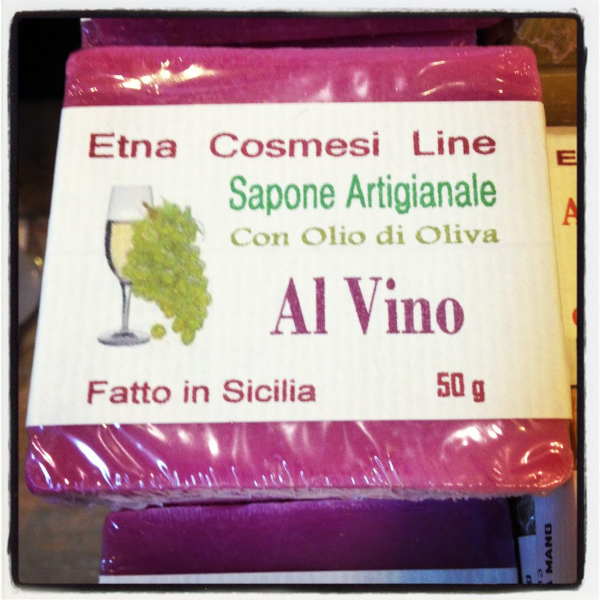

Wine and olive oil soap made in Sicily
In Italy beer (birra) is less popular than wine. You must be 18 years old to buy or drink alcoholic beverages, even though some say that at 16 you can legally drink beer as long as you buy it and drink it on the premises (like when you are at a restaurant or a club). Hhhmmm, confusion. What's clear though is that binge drinking is not very popular in Italy, because the main focus of the typical Italian get-together for social activities is not to drink beer (or wine) in order to get drunk, but just to spend some nice time together sipping a glass of wine and having dinner or nibbling on some snacks. {This is an excerpt from chapter 14 “Italian Lifestyle” of the eBook “Italy from the Inside. A native Italian reveals the secrets of traveling in Italy”. Buy our eBook on Amazon and leave us a review! If it’s good, you’ll make us happy, if it’s bad, you’ll make us improve. Thank you either way!}